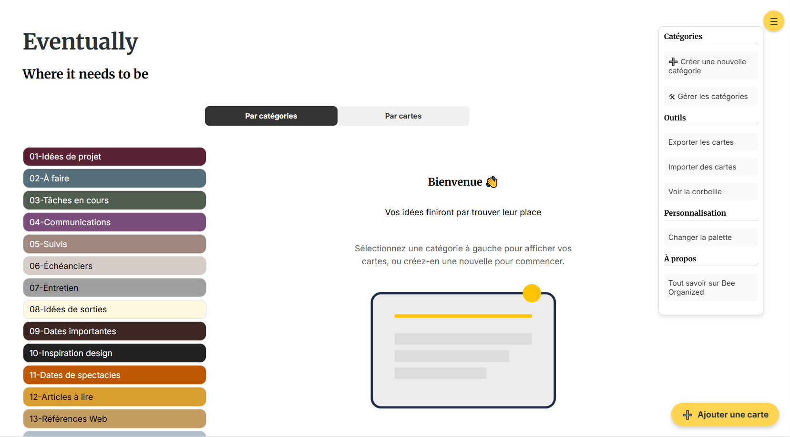

Outil d'organisation "Eventually"
Description du projet : Cet outil web personnel permet de centraliser, classer et retrouver efficacement des notes ou idées à l’aide d’un système de catégories imbriquées. Pensé pour une utilisation quotidienne, il combine une interface simple à une logique structurée et visuelle.
Technologies : HTML, CSS, JavaScript, Formspree, Responsive
- ✅Ajout, modification et suppression de notes
- 📂Création de catégories imbriquées à plusieurs niveaux
- 🎨Choix de couleurs pour identifier visuellement les catégories
- 📤Import/export complet des données (JSON)
- 🗑Corbeille temporaire pour récupérer les notes supprimées
- 🔍Filtres dynamiques par catégorie et vue adaptative selon l’écran
- 📱Interface mobile avec navigation par vue dédiée
- 🖥️Interface desktop en double panneau (catégories + notes)